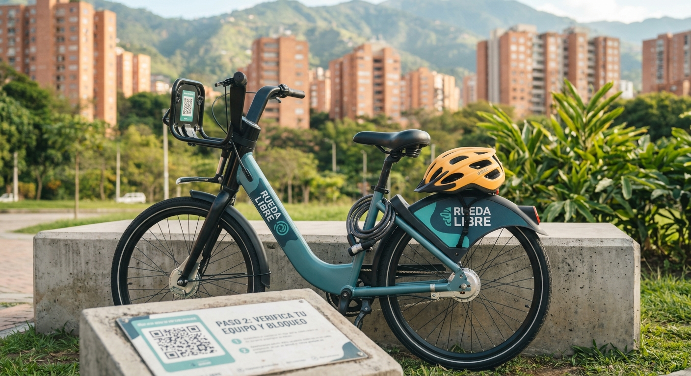
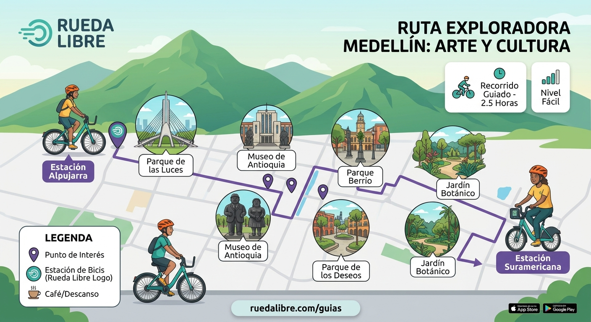
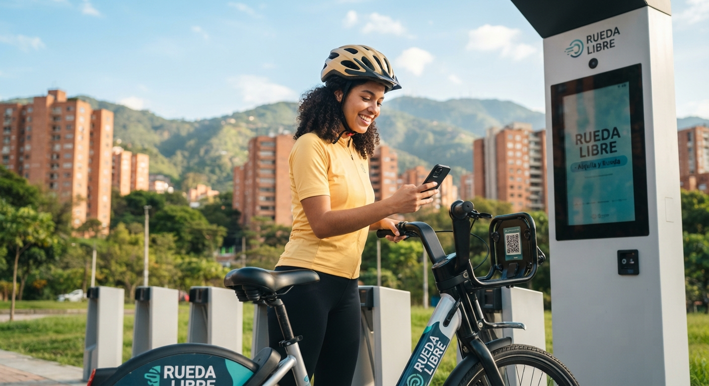

¡Descubre Medellín sobre dos ruedas! En Rueda Libre te ofrecemos el mejor alquiler de bicicletas para que explores la ciudad de la eterna primavera a tu propio ritmo. Bicicletas cómodas, seguras y los mejores precios. ¡Reserva la tuya hoy y empieza tu aventura!
En Rueda Libre, somos un equipo apasionado por la movilidad sostenible, la aventura y la magia de Medellín. Nacimos con el propósito de transformar la forma en que exploras la Ciudad de la Eterna Primavera. Creemos firmemente que la mejor manera de conectar con los rincones más vibrantes de nuestra cultura, el arte urbano y la calidez de la gente es pedaleando en libertad. No somos solo un servicio de alquiler; somos tus aliados para vivir experiencias inolvidables sobre dos ruedas, cuidando tu salud y protegiendo el medio ambiente.
Conquista las lomas de Medellín sin esfuerzo con nuestras bicicletas asistidas de última generación. Incluye casco reglamentario y candado de alta seguridad. ¡Tú pones el límite al camino!
No te preocupes por regresar al local; entregamos y recogemos tu bicicleta en tu hotel o lugar preferido.
Asistencia técnica rápida en ruta o mantenimiento preventivo para que tu bicicleta propia ruede siempre al 100%. Garantizamos baterías con carga completa
Todo lo necesario para que disfrutes de los domingos de Ciclovía en familia de forma cómoda y segura. Todas las rutas cuentan con seguro de asistencia médica.
Planes económicos diseñados para estudiantes y trabajadores que necesitan moverse por la ciudad todos los días.


Explora nuestro catálogo en línea o visítanos en el local para seleccionar el tipo de bicicleta que mejor se adapte a tu aventura.
Define si necesitas la bicicleta por un par de horas para la Ciclovía o por varios días para recorrer toda la ciudad.
Presenta una identificación oficial vigente, firma nuestro contrato digital de confianza, ¡y prepárate para disfrutar de Medellín!

Estamos ubicados en el corazón de la ciudad: Calle 10 #43E-15, El Poblado, Medellín. A solo tres calles de la Estación Poblado del Metro.
Mira nuestra localización exacta en el mapa digital: Ver Mapa de Google
Te esperamos Sabados y Domingos, de 7:00 a.m. a 8:00 p.m. (¡Perfecto para aprovechar al máximo los domingos de Ciclovía!).
¿Tienes dudas sobre reservas grupales? Escríbenos a: contacto@ruedalibre.com
Línea Directa de Atención:
Escríbenos por WhatsApp (+57 300 123 4567) para resolver tus dudas o reservar con anticipación.